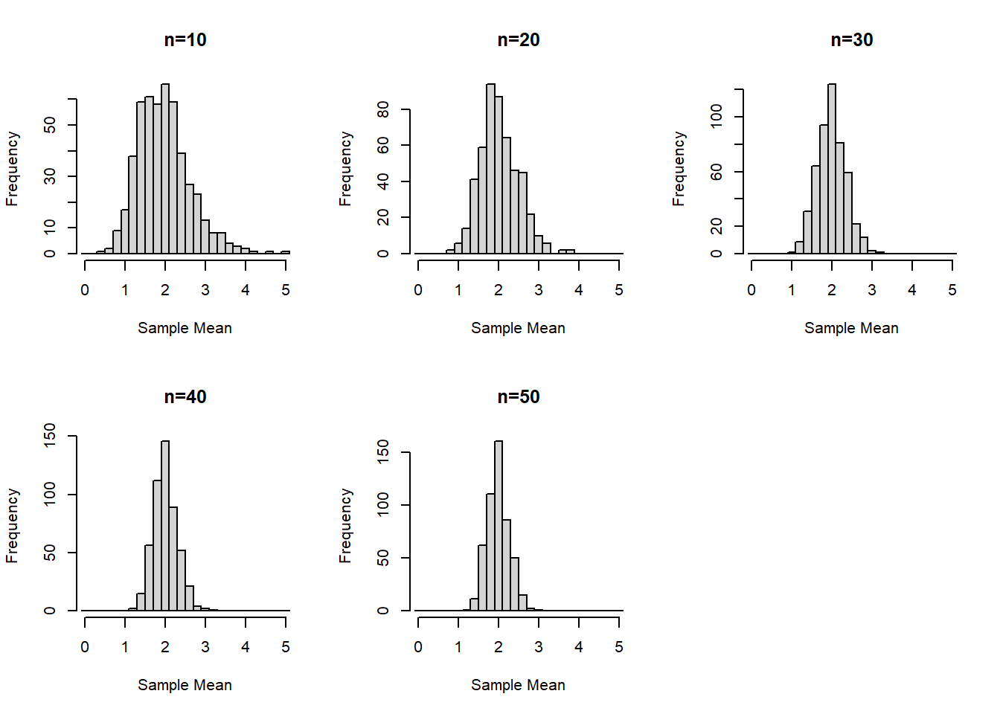
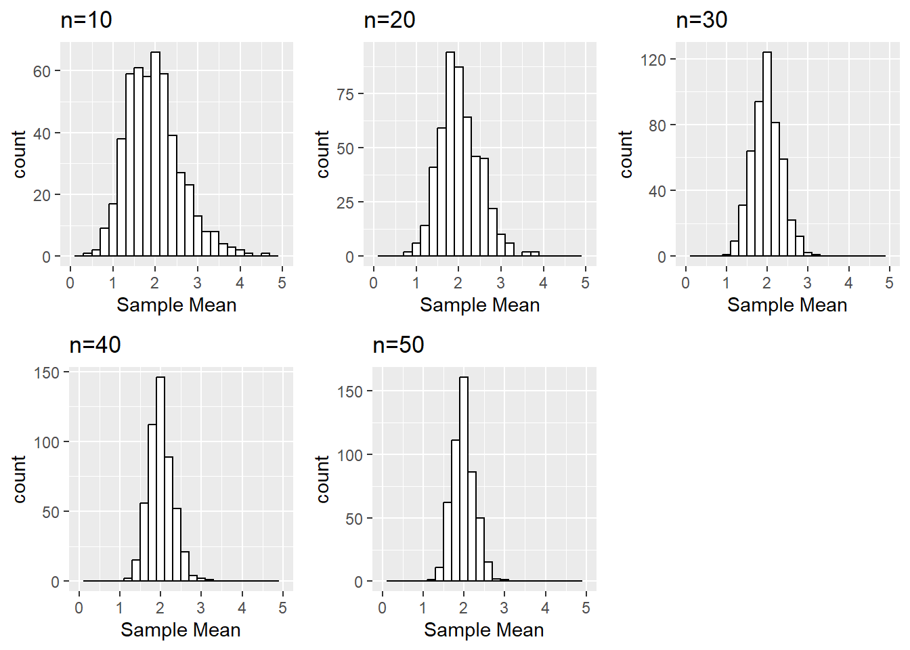

This page is part of the University of Colorado-Anschutz Medical Campus’ BIOS 6618 Recitation collection. To view other questions, you can view the BIOS 6618 Recitation collection page or use the search bar to look for keywords.
Note, this builds off the week 3 practice problems.
CLT for Chi-Squared Data
Assume we are interested in an outcome that has a chi-squared distribution with 2 degrees of freedom (i.e., \(df=2\)). Generate and save a vector with 500 sample means (i.e., the mean of five-hundred simulated “experiments”), where each sample mean is from a sample size of 10 simulated from rchisq() in R. Repeat for sample sizes of n = 20, n = 30, n = 40, and n = 50. It may be helpful to use a for loop or apply statement to tackle parts a and b simultaneously.
Solution:
Let’s start by seeing an example of what this might look like with a for loop:
Code
set.seed(6611) # set seed for reproducibilitynsim <-500sizeVec <-c(10,20,30,40,50)meanMatrix <-matrix(NA, nrow =500, ncol =5) # create matrix to save the results, with each row representing a simulated data set and each column representing a different sample sizecolnames(meanMatrix) <- sizeVec # name columns with the sample size for use in later summariesfor(j in1:5){for(i in1:nsim){ chisqData <-rchisq(n=sizeVec[j], df=2) meanMatrix[i,j] <-mean(chisqData) # save the i-th out of nsim simulations in the i-th row and in the j-th column for its corresponding sample size }}head(meanMatrix)
We could also implement this using sapply by creating a function to generate the 500 simulated means:
Code
set.seed(6611) # set seed for reproducibilitynsim <-500sizeVec <-c(10,20,30,40,50)chisq_sim_mean <-function(nsim, n, df=2){### Writing a short function to simulate chi-squared data to calculate the mean for # nsim: number of simulations to run and return mean for# n: sample size to generate# df: degrees of freedom for the chi-squared distribution, default is 2 sim_dat <-matrix(rchisq(n=n*nsim, df=df), ncol=nsim, byrow=FALSE) # simulate all observations and save in nsim columns to calculate the mean for, we specify byrow=FALSE so it will match our for loop approach abovecolMeans(sim_dat) # if we don't specify something to return, the last object is generally used by default}meanMatrix_sapply <-sapply(sizeVec, function(x) chisq_sim_mean(nsim=nsim, n=x))head(meanMatrix_sapply)
Creating Objects Within the Loop to Save Results (aka, You Won’t Believe This Crazy Programming Trick (that ended up with the programmer in Programmer Jail), Red Pill vs. Blue Pill, etc.)
A final way (not included in the solutions for the Week 3 practice problems) that I only include for completeness and in response to some recitation requests is to use an assign function TO CREATE OBJECTS TO STORE YOUR RESULTS INSIDE THE LOOP (cue: (1) with great power comes great responsibility, (2) there was weeping and gnashing of teeth, (3) if you play with fire you might get burned, etc., etc.).
I generally do NOT like using assign functions within things like loops, apply functions, etc. since it can very quickly have unintended consequences. If you initialize vectors, matrices, lists, data frames, etc. beforehand to store results in you generally have some idea of what you are getting into. By creating new objects within something like a loop you can end up accidentally creating 100s, 1000s, etc. of objects that may eat up your memory and send you down Blue Screen Memory Lane. It can be useful if you are adding new columns to a data frame where you just want to loop through some calculation or transformation (which is fairly contained), but otherwise it is like playing with fire.
Okay, with all these warnings and caveats, let’s see what happens:
Code
set.seed(6611) # set seed for reproducibility (we may be playing with fire, but we aren't monsters!)nsim <-500sizeVec <-c(10,20,30,40,50)for(j in1:5){ res_vec <-rep(NA, nsim) # initialize object to store results infor(i in1:nsim){ chisqData <-rchisq(n=sizeVec[j], df=2) res_vec[i] <-mean(chisqData) # save the i-th out of nsim simulations in the i-th row and in the j-th column for its corresponding sample size }# use the assign function to concatenate a vector name with paste0 and save the resultsassign(paste0('chisq_mean_res_n',sizeVec[j]), # name of objectvalue = res_vec) # what to save in the object}
Another limitation with this approach is that we still need to summarize the results, but we either have to loop through 5 different objects or combine the vectors into a single matrix:
Code
# use "get" to leverage our paste0 function to apply over the sample size objects/vectorsmeanMatrix_highwaytohell <-sapply(X=sizeVec, FUN =function(x) get(paste0('chisq_mean_res_n',x)))head(meanMatrix_highwaytohell)
Fortunately, this time we played with fire and did not get burned.
Mean and SD for Sample Mean from Chi-Squared Data
Calculate the mean and standard deviation associated with each of the five sets of \(\bar{x}\) values.
Solution:
Since we saved our results as a matrix above, we can easily use some of the optimized functions for applying functions to matrices. For example, the matrixStats package includes lots of options, but some are already included in base R (e.g., colMeans is included but colSds is not for calculating the mean and SD, respectively, for each column in a matrix).
Plotting the Sampling Distribution of the Sample Mean Across N’s
Create histograms of the sampling distribution of the mean, for each sample size n. Provide meaningful labeling (i.e., include a title and label the relevant axes).
Solution:
For this example we’ll start with using base R graphics:
Code
par( mfrow=c(2,3) )invisible( sapply(1:5, function(x) hist(meanMatrix[,x], xlim=c(0,5), breaks=seq(-0.1,5.1,by=0.2), xlab='Sample Mean', main=paste0('n=',sizeVec[x]) ) ) ) #invisible() suppresses the hist() function output to just provide the plots

We can do something similar with ggplot2 leveraged by creating a function and using lapply based on inspiration from various stack overflow posts:
Code
library(ggplot2)library(Rmisc) # to use multiplot functionhistogram_data_column <-function(matrix, column_num, column_label){### Transform the columns of a data frame into histograms# matrix: matrix to plot object from# column_num: column number to plot# column_label: label for the given columnggplot() +aes(matrix[,column_num]) +geom_histogram(binwidth=0.2, color='black', fill='white') +ggtitle(paste0('n=',column_label)) +xlab('Sample Mean') +xlim(0,5)}ggplot_histograms <-lapply(1:5, function(x) histogram_data_column(column_num=x, matrix = meanMatrix, column_label=sizeVec[x]))multiplot(plotlist = ggplot_histograms, layout=matrix(c(1,2,3,4,5,NA), nrow=2, byrow=T))

Is there a value of N where the distributions begin to look normal?
Is there a value of the sample size n (i.e., 10, 20, 30, 40, or 50) where the distributions begin to look normal?
Solution:
This is somewhat subjective since each person may find different outliers or points they find concerning. For example, at \(n=30\) is seems that our distribution is fairly normal. But one could claim \(n=20\) looks normal “enough” or even that the slight right skew even at \(n=50\) is concerning enough that perhaps a larger sample size is needed.
Source Code
---title: "Central Limit Theorem Example: Chi-Squared Distributed Data"author: name: Alex Kaizer roles: "Instructor" affiliation: University of Colorado-Anschutz Medical Campustoc: truetoc_float: truetoc-location: leftformat: html: code-fold: show code-overflow: wrap code-tools: true---```{r, echo=F, message=F, warning=F}library(kableExtra)library(dplyr)```This page is part of the University of Colorado-Anschutz Medical Campus' [BIOS 6618 Recitation](/recitation/index.qmd) collection. To view other questions, you can view the [BIOS 6618 Recitation](/recitation/index.qmd) collection page or use the search bar to look for keywords.*Note, this builds off the week 3 practice problems.*# CLT for Chi-Squared DataAssume we are interested in an outcome that has a chi-squared distribution with 2 degrees of freedom (i.e., $df=2$). Generate and save a vector with 500 sample means (i.e., the mean of five-hundred simulated "experiments"), where each sample mean is from a sample size of 10 simulated from `rchisq()` in R. Repeat for sample sizes of n = 20, n = 30, n = 40, and n = 50. It may be helpful to use a `for` loop or `apply` statement to tackle parts *a* and *b* simultaneously.**Solution:**Let's start by seeing an example of what this might look like with a `for` loop:```{r}set.seed(6611) # set seed for reproducibilitynsim <-500sizeVec <-c(10,20,30,40,50)meanMatrix <-matrix(NA, nrow =500, ncol =5) # create matrix to save the results, with each row representing a simulated data set and each column representing a different sample sizecolnames(meanMatrix) <- sizeVec # name columns with the sample size for use in later summariesfor(j in1:5){for(i in1:nsim){ chisqData <-rchisq(n=sizeVec[j], df=2) meanMatrix[i,j] <-mean(chisqData) # save the i-th out of nsim simulations in the i-th row and in the j-th column for its corresponding sample size }}head(meanMatrix)```We could also implement this using `sapply` by creating a function to generate the 500 simulated means:```{r}set.seed(6611) # set seed for reproducibilitynsim <-500sizeVec <-c(10,20,30,40,50)chisq_sim_mean <-function(nsim, n, df=2){### Writing a short function to simulate chi-squared data to calculate the mean for # nsim: number of simulations to run and return mean for# n: sample size to generate# df: degrees of freedom for the chi-squared distribution, default is 2 sim_dat <-matrix(rchisq(n=n*nsim, df=df), ncol=nsim, byrow=FALSE) # simulate all observations and save in nsim columns to calculate the mean for, we specify byrow=FALSE so it will match our for loop approach abovecolMeans(sim_dat) # if we don't specify something to return, the last object is generally used by default}meanMatrix_sapply <-sapply(sizeVec, function(x) chisq_sim_mean(nsim=nsim, n=x))head(meanMatrix_sapply)```## Creating Objects Within the Loop to Save Results (aka, You Won't Believe This Crazy Programming Trick (that ended up with the programmer in Programmer Jail), Red Pill vs. Blue Pill, etc.)A final way (not included in the solutions for the Week 3 practice problems) that I only include for completeness and in response to some recitation requests is to use an `assign` function **TO CREATE OBJECTS TO STORE YOUR RESULTS INSIDE THE LOOP** (cue: (1) with great power comes great responsibility, (2) there was weeping and gnashing of teeth, (3) if you play with fire you might get burned, etc., etc.).I generally **do NOT like** using `assign` functions within things like loops, `apply` functions, etc. since it can very quickly have unintended consequences. If you initialize vectors, matrices, lists, data frames, etc. beforehand to store results in you generally have some idea of what you are getting into. By creating new objects within something like a loop you can end up accidentally creating 100s, 1000s, etc. of objects that may eat up your memory and send you down Blue Screen Memory Lane. It can be useful if you are adding new *columns* to a data frame where you just want to loop through some calculation or transformation (which is fairly contained), but otherwise it is like playing with fire.Okay, with all these warnings and caveats, let's see what happens:```{r}set.seed(6611) # set seed for reproducibility (we may be playing with fire, but we aren't monsters!)nsim <-500sizeVec <-c(10,20,30,40,50)for(j in1:5){ res_vec <-rep(NA, nsim) # initialize object to store results infor(i in1:nsim){ chisqData <-rchisq(n=sizeVec[j], df=2) res_vec[i] <-mean(chisqData) # save the i-th out of nsim simulations in the i-th row and in the j-th column for its corresponding sample size }# use the assign function to concatenate a vector name with paste0 and save the resultsassign(paste0('chisq_mean_res_n',sizeVec[j]), # name of objectvalue = res_vec) # what to save in the object}```Another limitation with this approach is that we still need to summarize the results, but we either have to loop through 5 different objects or combine the vectors into a single matrix:```{r}# use "get" to leverage our paste0 function to apply over the sample size objects/vectorsmeanMatrix_highwaytohell <-sapply(X=sizeVec, FUN =function(x) get(paste0('chisq_mean_res_n',x)))head(meanMatrix_highwaytohell)```Fortunately, this time we played with fire and did not get burned. # Mean and SD for Sample Mean from Chi-Squared DataCalculate the mean and standard deviation associated with each of the five sets of $\bar{x}$ values.**Solution:**Since we saved our results as a matrix above, we can easily use some of the optimized functions for applying functions to matrices. For example, the `matrixStats` package includes lots of options, but some are already included in base R (e.g., `colMeans` is included but `colSds` is not for calculating the mean and SD, respectively, for each column in a matrix).```{r, message=F}library(matrixStats)colMeans(meanMatrix)colSds(meanMatrix) # we need to load the matrixStats package for this calculation```It is also possible to calculate the mean and SD by using the `apply` function:```{r}apply(meanMatrix,2,mean)apply(meanMatrix,2,sd)```# Plotting the Sampling Distribution of the Sample Mean Across N'sCreate histograms of the sampling distribution of the mean, for each sample size n. Provide meaningful labeling (i.e., include a title and label the relevant axes).**Solution:**For this example we'll start with using base R graphics:```{r}par( mfrow=c(2,3) )invisible( sapply(1:5, function(x) hist(meanMatrix[,x], xlim=c(0,5), breaks=seq(-0.1,5.1,by=0.2), xlab='Sample Mean', main=paste0('n=',sizeVec[x]) ) ) ) #invisible() suppresses the hist() function output to just provide the plots```We can do something similar with `ggplot2` leveraged by creating a function and using `lapply` based on inspiration from various stack overflow posts:```{r, warning=F, message=F}library(ggplot2)library(Rmisc) # to use multiplot functionhistogram_data_column <-function(matrix, column_num, column_label){### Transform the columns of a data frame into histograms# matrix: matrix to plot object from# column_num: column number to plot# column_label: label for the given columnggplot() +aes(matrix[,column_num]) +geom_histogram(binwidth=0.2, color='black', fill='white') +ggtitle(paste0('n=',column_label)) +xlab('Sample Mean') +xlim(0,5)}ggplot_histograms <-lapply(1:5, function(x) histogram_data_column(column_num=x, matrix = meanMatrix, column_label=sizeVec[x]))multiplot(plotlist = ggplot_histograms, layout=matrix(c(1,2,3,4,5,NA), nrow=2, byrow=T))```# Is there a value of N where the distributions begin to look normal?Is there a value of the sample size n (i.e., 10, 20, 30, 40, or 50) where the distributions begin to look normal?**Solution:**This is somewhat subjective since each person may find different outliers or points they find concerning. For example, at $n=30$ is seems that our distribution is fairly normal. But one could claim $n=20$ looks normal "enough" or even that the slight right skew even at $n=50$ is concerning enough that perhaps a larger sample size is needed.